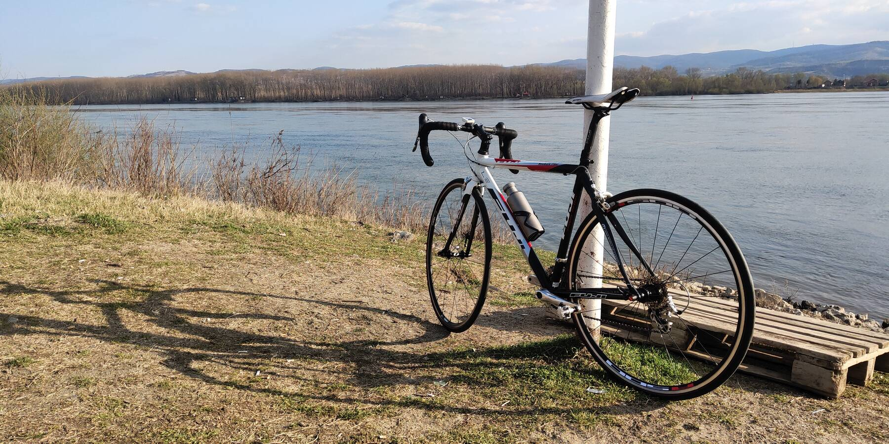

Ну что ж. Back on track, как говорится... Купил велосипед. Старый алю шоссер 2008 (кажется) года, Fuji Roubaix PRO, больше таких не делают. Карбоновая вилка и карбоновый хвост, вес около 9кг. От родной навески не осталось практически ничего, всё железо — древняя Ultegra (где-то 2003 года, кажется, R6600), колёса Oval Concepts 524.
После десятилетнего перерыва всё будет катить, я понимаю... Но этот вроде действительно катит :) Вчера совершил первый пробно-регулировочный выезд вдоль Дуная. Очень приятный ход, неровности дороги карбоний подъедает вполне исправно. В целом доволен, разве что седло не моё. Хотя, может быть, и прикатается.
Что удивило: местные собаки вообще никак не реагируют на велосипедиста. Видимо, двухколёсных тварей в Воеводине настолько много, что собаки тупо привыкли к образу.
Шоссейники здороваются со встречными шоссейниками. Прямо как мотоциклисты. Прикольно.
В планах — раскатать хорошенько Фрушку гору вдоль и поперёк, ну и, разумеется, проехать хотя бы один 200км марафон в этом году.